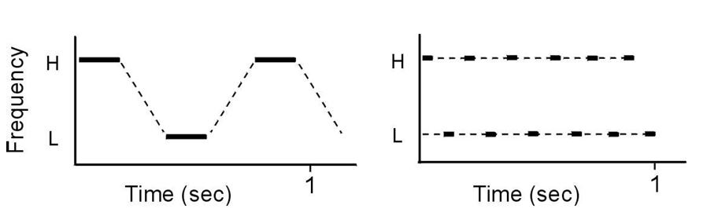

The Cocktail Party Effect is a perceptual auditory phenomenon named by E. Cherry in 1953. In the specific setting of a ‘cocktail party’, it describes the human ability to “... focus attention on the speech of a specific speaker by disregarding irrelevant information … ” (Augoyard, 2014). Further described by Cherry, “selective listening is governed by our capacity to discriminate sounds from different sources …” (Augoyard, 2014). The effect is demonstrated by an audio excerpt of Thomson House at McGill university, a social meeting space for graduate students. Despite the cluttered and densely populated audio events present, we are able to distinguish unique sound sources such as individual voices, background music, movement of chairs, etc. When humans listen to their environment, all sound sources enter their ears as one combined signal (MITCBMM, 2016). How do we make sense of this tangled sum of sound around us?
Auditory Scene Analysis (ASA) examines how humans perceptually isolate unique sound sources that construct our understanding of our auditory environments (Bregman, 1990). ASA has been well defined by Albert Bregman, a late professor at McGill University, and deeply explored in his book ‘Auditory Scene Analysis: The Perceptual Organization of Sound’ published in 1990. Bregman describes two approaches from the auditory system: bottom-up primitive grouping processes and top-down schema based recognition (Bregman, 1990).
Primitive ASA consists of grouping and segregating incoming auditory data into auditory streams (Bregman, 1984). The grouping can be sequential or simultaneous (Bregman, 1984). Sequential grouping is best described by a popular streaming phenomenon with alternating pure tones. When the tones alternate at a steady pace, they are heard as one single stream like a repetitive melody. When the cycle speeds up however, two streams of sound emerge in which the listener hears only the higher tone or only the lower tone. Sequential grouping principles are comparable to Gestalt principles that explain human visual perception. We tend to cluster items that are close together.
The ‘perceptual distance’ between sounds can be evaluated by multiple acoustic dimensions. Fundamental frequency, temporality (the sound’s existence in time and in context to other sounds), timbre, spatial direction and transitions are all acoustic dimensions that influence the perception of a singular or multiple streams of sound (Bregman, 1984). Perceptual stream emergence can be extrapolated to understand our ability and tendencies to isolate unique sound sources in the world. Simultaneous grouping pertains to cues that are characteristic of a common source. Periodicity, where all component frequencies are integer multiples of a common fundamental, is usually indicative of a human voice, animal call or musical instrument (Bregman, 1984). Different fundamentals are typically aggregated. Furthermore, synchrony of onsets and offsets, spatial location, similar amplitude fluctuations are all cues that can induce simultaneous grouping (Bregman, 1984). Simultaneous grouping is also referred to as ‘spectral integration’ as it deals with spectrally identifiable components (Bregman, 1990).
Schemas are built on attention and past experiences. When we are tuned to listen to something specific, we are better equipped to isolate it from our environment (Bregman, 1984). For example, the ability of a trained musician to follow an instrument in an orchestral piece well exceeds that of a non musician. Most of Bregman’s work has dealt with primitive auditory analysis, as schemas and attentional considerations become much more complex (Bregman, 1984).
Computational Auditory Scene Analysis (CASA) seeks to model and simulate ASA. Specifically, to computationally extract sound sources from a cluttered auditory environment. The specifics of a CASA model, regarding its input and output, are however quite broad (Elhilali, 2017). The process always begins with an acoustic signal, however there is the question of monaural or binaural form. Even more variably, the final goal of a CASA system has a range of focus. Perhaps the system only performs analysis and segregation, where the resulting product is the composing sound sources of the input (Elhilali, 2017). The granularity of the number of sources identified is up for debate. Recognition is another possible outcome (Elhilali, 2017). Perhaps building off analysis and segregation, recognition of an environment or melody is different from a description of its parts. Finally, a recreation of identified sound sources through synthesis is another interpretation of CASA (Elhilali, 2017). Regarding these various executions of CASA, a proposed definition by Brown and Wang is: “It is the field of computational study that aims to achieve human performance in ASA by using one or two microphone recordings of the acoustic scene” (Wang, 2006a, p.11).
The ability of CASA to perform ASA has vast applications and benefits. It enables the neural and perceptual investigations of ASA in humans and animals, concerns the more specific field of automatic speech recognition (ASR) and has furthered the development of hearing prosthesis (hearing aids) (Wang, 2006a). In entertainment and the arts, CASA may realize automatic music transcription and auditory scene reconstruction in sound design (video games, movies, etc.). Regarding my personal motivations, my interest in human definition and segregation of sound, noise and music is another shade of ASA. More specifically, I hope to investigate how source recognition of everyday sounds differs from the identification of instruments in an orchestra. This literature review focuses on biologically centred CASA models to further my understanding of human perceptual ASA.